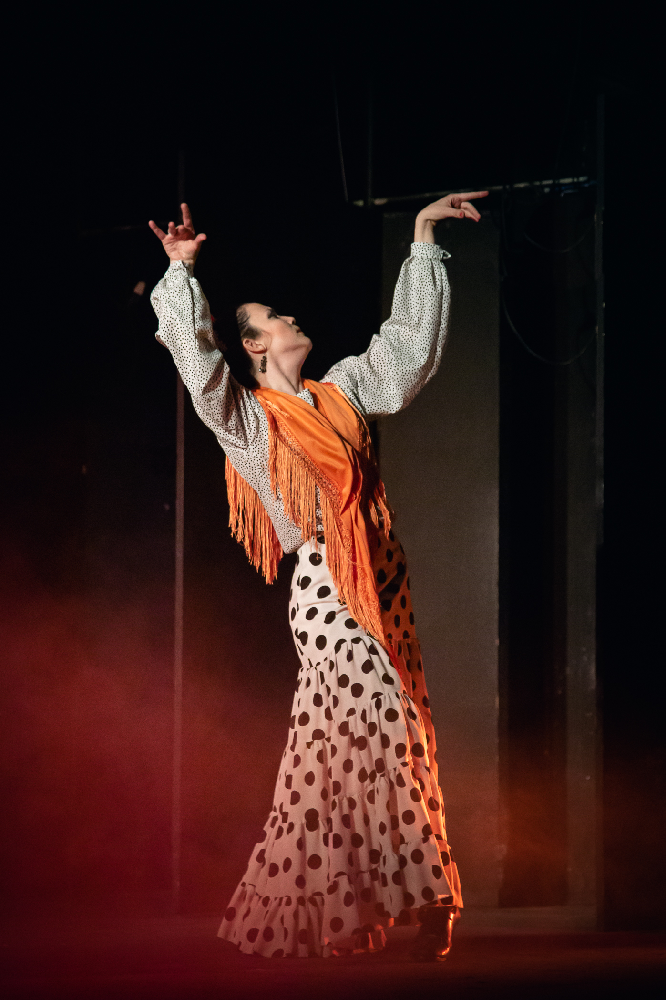
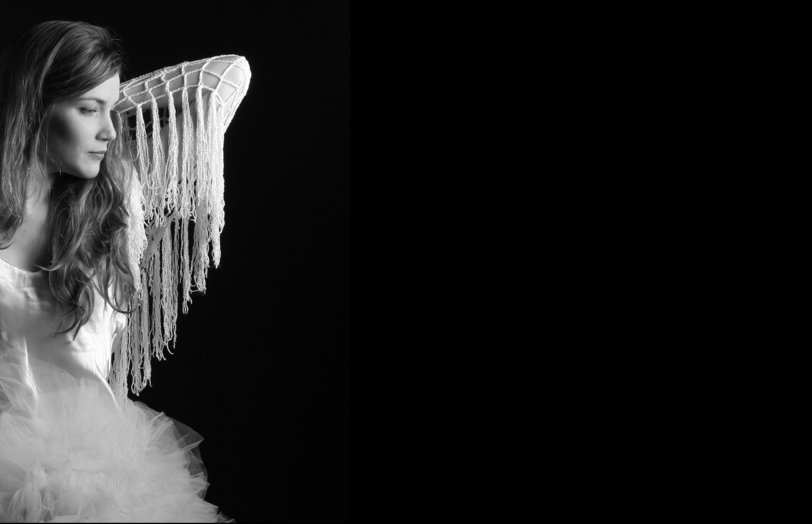
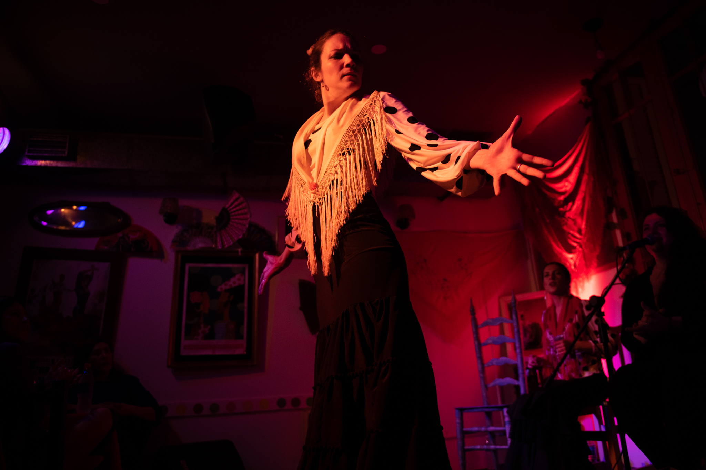

Natalia Riopedre estudió diferentes danzas desde temprana edad, acercamiento que se convertiría en el eje de su trayectoria profesional. Es egresada de la Universidad Nacional de las Artes (UNA), de la carrera de Composición Coreográfica, formación que le permitió nutrirse de múltiples disciplinas antes de encontrar en el flamenco su forma de expresión más representativa.

Se formó en Argentina con maestros como José Zartmann, Graciela Ríos Saiz y Sibila, entre otros. También estudió con bailaores españoles como Ángel Pericet, La China, Belén Maya y Manuel Liñán. En 2012 y en 2022 viajó a España, donde tomó clases con Andrés Marín, Úrsula López, Alicia Márquez y Leonor Leal.

Trabajó en diversos tablaos y en shows para eventos. Formó parte del grupo Moraires Flamenco, con el que grabó un disco y se presentó en distintos teatros de Buenos Aires. Participó como bailarina en espectáculos como Doña Francisquita, Claroscuro, Federico Vive y Cría Cuervos, entre otros.

Como creadora y directora, Natalia Riopedre es autora de las obras Que Me Lleve Donde Quiera, Apariciones, Crudo y Perimetral, esta última su producción más reciente. Varias de estas producciones continúan en cartel, mientras nuevos proyectos se encuentran en desarrollo.

Inició su carrera docente en flamenco en el año 2000, trabajando con distintos grupos en la preparación de obras y presentaciones en tablaos y peñas. Es también docente de Expresión Corporal en escuelas y de manera particular, integrando ambas disciplinas en su enseñanza.